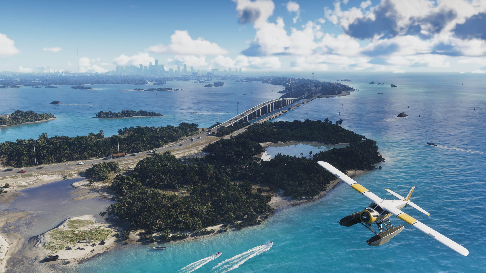

Praias
Orla extensa, palmeiras e pôr do sol, com paisagens inspiradas no litoral da Flórida.

Grand Theft Auto VI
Praias, luzes neon, carros e perigo em cada esquina. A maior cidade de Leonida está de volta.
Vice City é inspirada em Miami e reúne cenários muito diferentes em um só lugar.
Orla extensa, palmeiras e pôr do sol, com paisagens inspiradas no litoral da Flórida.

Prédios, avenidas e bairros com personalidades diferentes, cheios de gente e movimento.

O mundo aberto permite ir a qualquer lugar e descobrir ambientes novos a cada passeio.
Conheça Jason e Lucia, os dois protagonistas desta nova aventura.
Ver personagens